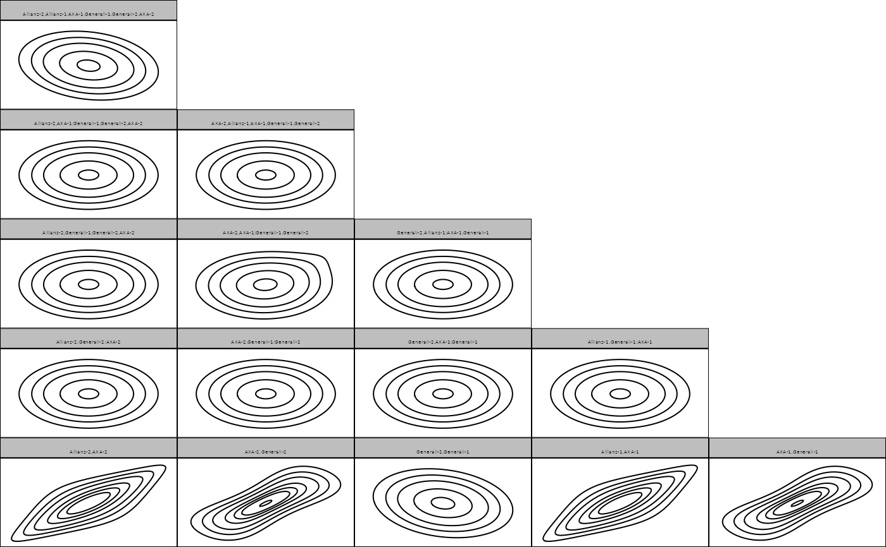

Automated fitting or creation of custom S-vine distribution models
svine( data, p, margin_families = univariateML::univariateML_models, selcrit = "aic", ... )
Arguments
| data | a matrix or data.frame of data. |
|---|---|
| p | the Markov order. |
| margin_families | either a vector of univariateML families to select from (used for every margin) or a list with one entry for every variable. |
| selcrit | criterion for family selection, either |
| ... | arguments passed to |
Examples
# load data set data(returns) # fit parametric S-vine model with Markov order 1 fit <- svine(returns[1:100, 1:3], p = 1, family_set = "parametric") fit#> 3-dimensional S-vine distribution model of order p = 1 ('svine_dist')summary(fit)#> $margins #> # A data.frame: 3 x 5 #> margin name model parameters loglik #> 1 Allianz Logistic 0.0015, 0.0073 292 #> 2 AXA Logistic 0.0029, 0.0084 277 #> 3 Generali Logistic 0.00088, 0.00770 286 #> #> $copula #> # A data.frame: 15 x 11 #> tree edge conditioned conditioning var_types family rotation parameters df #> 1 1 4, 5 c,c t 0 0.72, 3.66 2 #> 1 2 5, 6 c,c frank 0 7.4 1 #> 1 3 6, 3 c,c gaussian 0 -0.2 1 #> 1 4 1, 2 c,c t 0 0.72, 3.66 2 #> 1 5 2, 3 c,c frank 0 7.4 1 #> 2 1 4, 6 5 c,c indep 0 0 #> 2 2 5, 3 6 c,c indep 0 0 #> 2 3 6, 2 3 c,c indep 0 0 #> 2 4 1, 3 2 c,c indep 0 0 #> 3 1 4, 3 6, 5 c,c indep 0 0 #> tau loglik #> 0.52 NaN #> 0.58 NaN #> -0.13 NaN #> 0.52 NaN #> 0.58 NaN #> 0.00 NaN #> 0.00 NaN #> 0.00 NaN #> 0.00 NaN #> 0.00 NaN #> # ... with 5 more rows #>logLik(fit)#> [1] 942.4027 #> attr(,"df") #> [1] 12